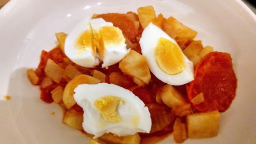

Spiced potatoes and tomatoes
Substantial enough to serve solo, this dish consists of diced potatoes cooked gently in a fresh tomato sauce which is flavoured with curry leaves and green chillis.
Ingredients
- 1 tbsp olive oil
- 2 onions, finely chopped
- 4 curry leaves
- 0.25 tsp onion seeds
- 1 green chilli, deseeded and chopped
- 4 tomatoes, sliced
- 1 tsp grated fresh root ginger
- 1 garlic clove crushed
- 1 tsp chilli powder
- 1 tsp ground coriander
- salt
- 2 potatoes, diced
- 1 tsp lemon juice
- 1 tbsp chopped fresh coriander
- 4 hard boiled eggs
Instructions
- Heat the oil in a non-stick wok or frying pan and stir-fry the onions, curry leaves, onion seeds and chilli for about 1 minute.
- Add the tomatoes and cook for about 2 minutes over a low heat, shaking the pan to prevent them from sticking
- Add the ginger, garlic, chilli powder, ground coriander and salt to taste. Continue to stir-fry for 1-2 minutes, then add the potatoes and cover the pan. Cook over a low heat for 5-7 minutes until the potatoes are tender.
- Add the lemon juice and fresh coriander, and stir to mix together.
- Shell the hard boiled eggs, cut into quarters and add as a garnish to the finished dish.